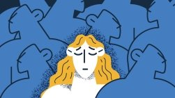

Prepare for your first visit
We know getting ready to visit UT MD Anderson may be stressful, so we’ve created a list to make things easier for you.
Get readyU.S. News & World Report — 12 years in a row.
Learn more about this rankingThree things most patients need first — sorted before you arrive.
We know getting ready to visit UT MD Anderson may be stressful, so we’ve created a list to make things easier for you.
Get readyView our list of accepted health insurance plans to determine if you are covered.
View plansWe can arrange domestic and international travel to and from Houston and help you find nearby accommodations.
Plan your tripEvery day, people like you choose UT MD Anderson for cancer treatment. But it’s more than our decades of experience, top national rankings and leadership in cancer prevention that set us apart. It goes beyond our groundbreaking research and innovative clinical care that provide new therapies years before they become standard in the community. It’s because we put all of our focus on you.
Learn more about UT MD AndersonPeople are the proof — survivors, caregivers, physicians and researchers, in their own words.
 Watch the video
Our people
Watch the video
Our people
What six survivors noticed before diagnosis
CancerwiseOne caregiver’s reasons for giving back
PodcastPreventing skin cancer with UPF clothing
 Listen
Cancerwise
Listen
Cancerwise
Breaking through isolation after a cancer diagnosis

Read the story CancerwiseWays to improve sleep during treatment
Read the story Only Possible HereSupport our effort to transform bold ideas into real impact
CancerwiseWhat to know before deciding to enroll
DRAG OR SCROLL
Family members, friends and the community are encouraged to donate whole blood and platelets for UT MD Anderson patients.
Schedule a blood donation appointmentYour gift will help make a tremendous difference.
DonateShow your support for our mission through branded merchandise.
View productsNo one should face cancer alone. Connect with people who understand — free of charge.
Talk to someone who shares your cancer diagnosis and be matched with a survivor.
Request a matchTake advantage of short-term counseling provided free of charge by our clinical social workers.
Find a support coach